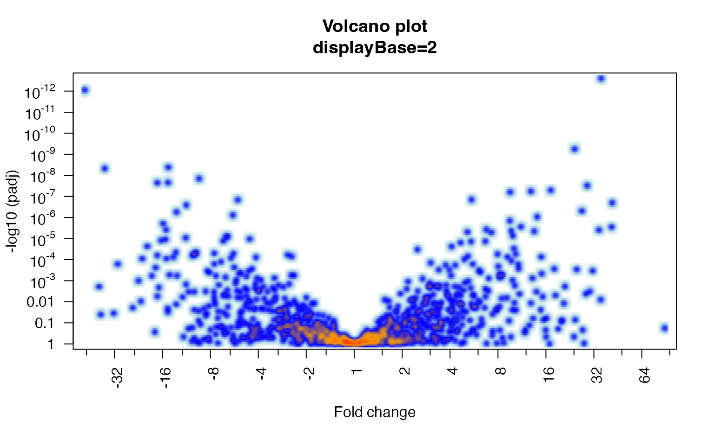
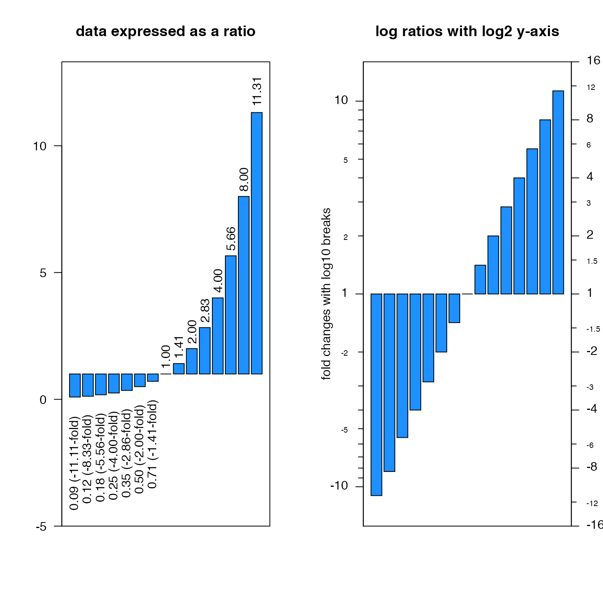
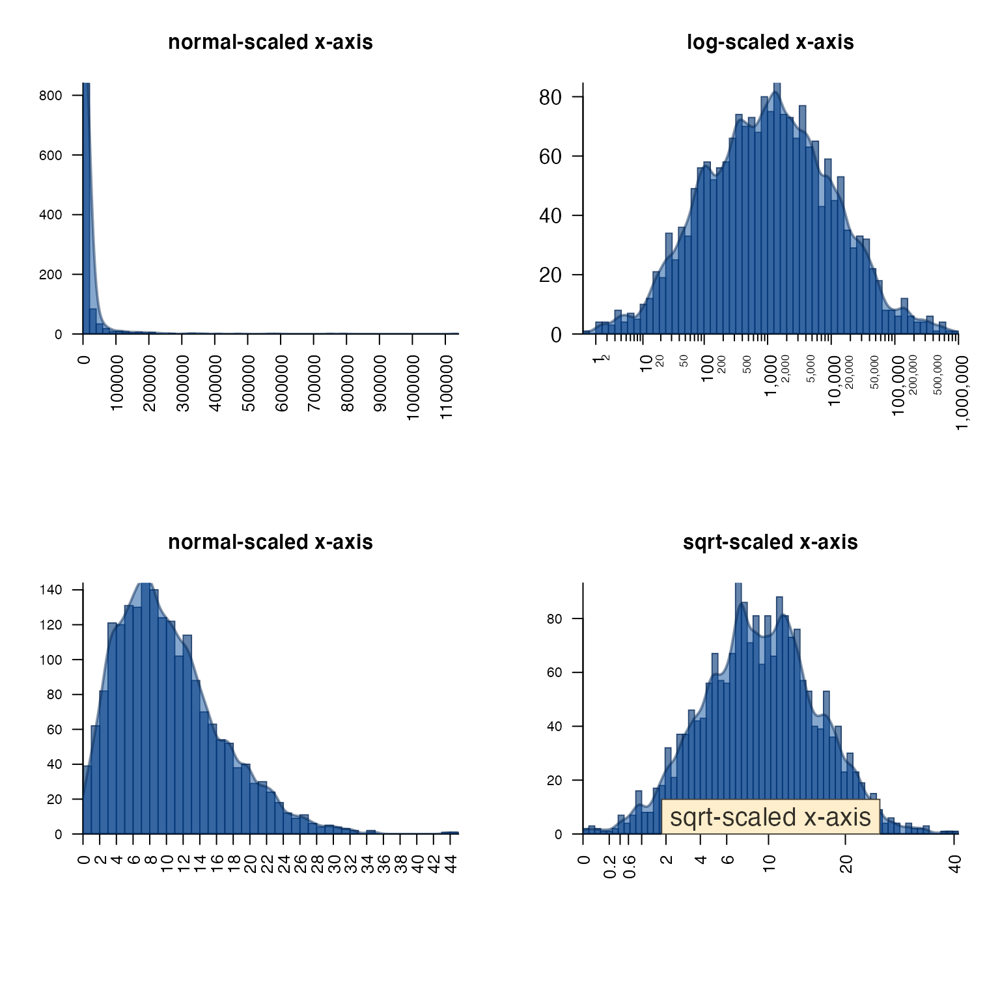
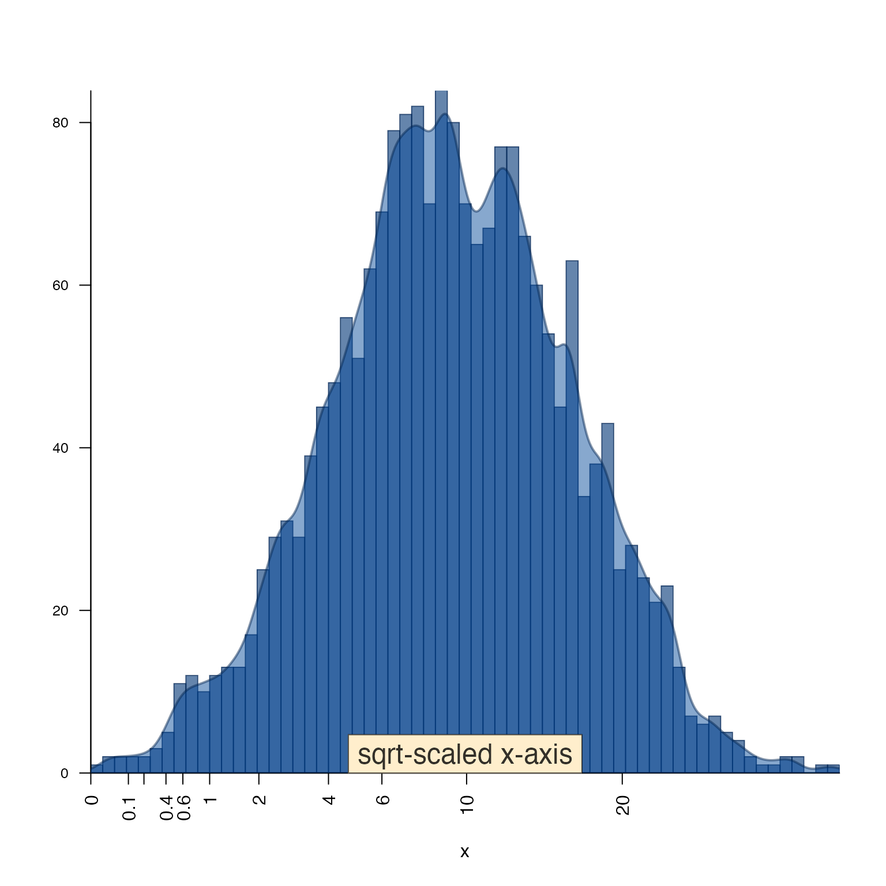
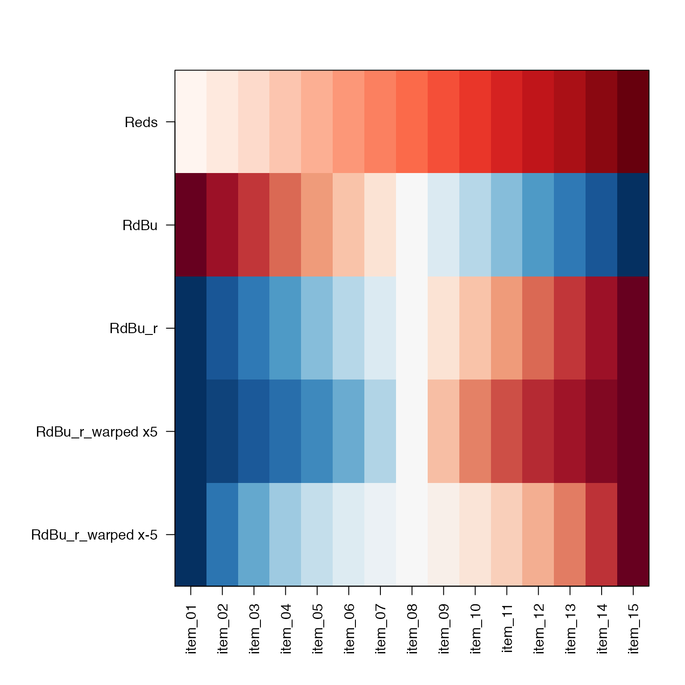
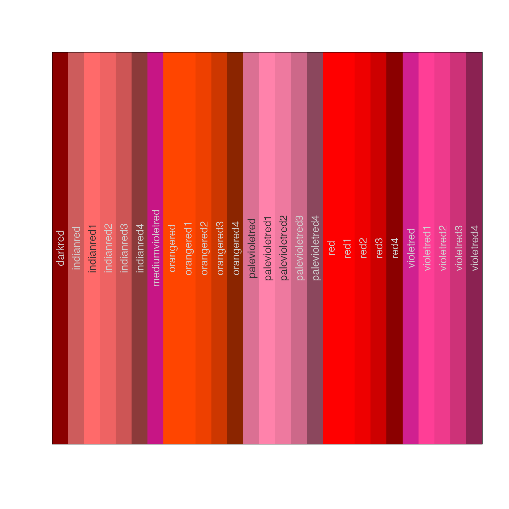

Jamba Overview
Jamba is intended to contain JAM base functions, to be re-used during analysis, and by other R packages. Functions are broadly divided into categories.
Plot functions
plotSmoothScatter()
A common problem when visualizing extremely large datasets is how to display thousands of datapoints while indicating the amount of overlap of those points. The R graphics::smoothScatter() function provides an adequate drop-in replacement for most uses of plot(), where several aspects are enhanced. Specifically, parameters related to the density function and related bandwidth arguments are enabled, which otherwise is possible but tedious.
The arguments bandwidthN and nbin define the number of bandwidth steps, and the number of visual bins, respectively. The bandwidth steps defines the level of detail calculated for the 2-dimensional density map, higher values give more detail, seen as more “grainy” – ultimately whether you can see individual points. The number of visual bins determines the amount of detail used to render the density as an image – effectlvely how many density pixels. Higher values show more detail, but have much larger memory requirement, and can be slow to render for multi-panel plots.
The argument useRaster=TRUE by default renders the plot as a rasterized image, making it substantially faster and smaller especially when rendered as a PDF, SVG, or any vector type output.
An example showing plotSmoothScatter() with argument doTest=TRUE. The test data shows a set of points not well-resolved with default smoothScatter(), but which is more clearly displayed with plotSmoothScatter().
plotSmoothScatter(doTest=TRUE);
The function imageDefault() is a slight enhancement to graphics::image() specifically to enforce square pixels when useRaster=TRUE. The default graphics::image() assumes each pixel will be rendered in a 1:1 aspect ratio, therefore the 2-dimensional density map is distorted when the axis ranges are not symmetric 1:1. Note that plotSmoothScatter() calls imageDefault().
imageByColors()
The imageByColors() function is intended to take a matrix or data.frame that already contains colors in each cell. It optionally displays cell labels when supplied.
Cell labels are grouped to display one unique label per repeated label, using the function breaksByVector() to group labels.
This function is particularly useful to simplify labels in a large table of repeated values, for example in experiment design.
Here, we define a simple data.frame composed of colors, then use the data.frame to label itself:
a1 <- c("red","blue")[c(1,1,2)];
b1 <- c("yellow","orange")[c(1,2,2)];
c1 <- c("purple","orange")[c(1,2,2)];
d1 <- c("purple","green")[c(1,2,2)];
df1 <- data.frame(a=a1, b=b1, c=c1, d=d1);
imageByColors(df1, cellnote=df1);
Labels can be independently rotated and resized, an arbitrary example is shown below:
imageByColors(df1,
cellnote=df1,
useRaster=TRUE,
#adjBy="column",
cexCellnote=list(c(1.5,1.5,1),
c(1,1.5),
c(1.6,1.2),
c(1.6,1.5)),
srtCellnote=list(c(90,0,0),
c(0,45),
c(0,0,0),
c(0,90,0)));
Axis label functions
There are several useful axis labeling functions.
For log-transformed data, minorLogTicksAxis() is a flexible function to help deal with different transforms, such as log2(1 + x), which is common when analyzing gene expression data, or any measurement data that may contain zeros and no negative values.
Data transformed with log2(1 + x) must be correctly inverse-transformed to generate the proper numeric labels.
By default, the log labels are displayed in base 10, while the underlying data can be any numeric base. (The default assumes log2.)
Also note that zero values are represented as zero.
expr <- 2^seq(from=0, to=17, length.out=20) - 1;
par("mfrow"=c(2,2));
layout(matrix(ncol=2, data=c(1,2,3,3)));
bp1 <- barplot(expr,
las=2,
col="dodgerblue",
main="measurement data in normal space");
axis(1, at=bp1[,1], labels=seq_along(bp1[,1]), las=2)
par("xpd"=FALSE);
bp1 <- barplot(expr[c(1,which(expr<=100)+1)],
ylim=c(0,100),
las=2,
col="dodgerblue",
main="zoomed-in y-axis");
axis(1, at=bp1[,1], labels=seq_along(bp1[,1]), las=2)
log_expr <- log2(1 + expr);
bp1 <- barplot(log_expr,
las=2,
col="dodgerblue",
ylab="log2(1 + x) value",
main="measurement data after log2(1+x) transform");
axis(1, at=bp1[,1], labels=seq_along(bp1[,1]), las=2)
minorLogTicksAxis(side=4,
logBase=2,
offset=1,
displayBase=10);
mtext(side=4,
line=2.95,
las=0,
"normal space measurement values")
Another common example is with log fold change (also called log ratio). The log fold change is preferred to represent fold changes because it allows the “up” and “down” values to be symmetric.
fr <- round(2^(0:14/2 - 3.5), digits=2);
fc <- round(ifelse(fr < 1, -1/fr, fr), digits=2);
fl <- paste0(format(fr, trim=TRUE),
ifelse(fr < 1, paste0(" (",
format(fc, trim=TRUE),
"-fold)"),
""));
par("mfrow"=c(1,2));
bp1 <- barplot(fr-1,
ylim=c(-5, max(fr)+2),
las=2,
offset=1,
col="dodgerblue",
main="data expressed as a ratio");
k <- (fr < 1);
text(x=bp1[k,1],
y=fr[k],
srt=90,
adj=1.2,
fl[k]);
text(x=bp1[!k,1],
y=fc[!k],
srt=90,
adj=-0.2,
fl[!k]);
box();
log_fc <- log2(fr);
barplot(log_fc,
ylim=c(-4, 4),
yaxt="n",
col="dodgerblue",
main="log ratios with log2 y-axis");
box();
minorLogTicksAxis(side=2,
logBase=2,
offset=0,
symmetricZero=TRUE,
displayBase=10);
mtext(side=2,
line=2,
las=0,
"fold changes with log10 breaks");
minorLogTicksAxis(side=4,
logBase=2,
offset=0,
symmetricZero=TRUE,
displayBase=2);
mtext(side=4,
line=2,
las=0,
"fold changes with log2 breaks");
plotPolygonDensity()
A convenience function plotPolygonDensity() is a light wrapper around two functions: hist() and density(). However, it makes two other options convenient:
- transform the x-axis with either
log10(1+x)orsqrt(), - display multiple panels for each column of a numeric matrix.
par("mar"=c(8,4,4,2), "mfrow"=c(2, 2));
options("scipen"=7);
plotPolygonDensity(10^(3+rnorm(2000)),
breaks=50,
cex.axis=1,
main="normal-scaled x-axis");
plotPolygonDensity(10^(3+rnorm(2000)),
log="x",
breaks=50,
main="log-scaled x-axis");
plotPolygonDensity((3+rnorm(2000))^2,
cex.axis=1,
breaks=50,
main="normal-scaled x-axis");
plotPolygonDensity((3+rnorm(2000))^2,
cex.axis=1,
xScale="sqrt",
breaks=50,
main="sqrt-scaled x-axis");
drawLabels(preset="bottom",
txt="sqrt-scaled x-axis",
labelCex=1.5)
drawLabels()
drawLabels() is aimed at base R graphics, and provides a quick way to add a label to a plot. The argument preset is used to place the label relative to the sides and corners of the plot.
par("mfrow"=c(1,1))
plotPolygonDensity((3+rnorm(2000))^2,
cex.axis=1,
xScale="sqrt",
breaks=50,
main="");
drawLabels(preset="bottom",
txt="sqrt-scaled x-axis",
labelCex=1.5)
Colors
For me, color plays a big role in my daily work, both in how I use R, and the figures and visualizations I produce during data analysis.
Another Jam package colorjam focuses on defining categorical colors in an extensible manner.
getColorRamp()
getColorRamp() is a workhorse of several other functions and workflows. It tries to make convenient the job of obtaining a color ramp (aka a color palette, or color gradient). It interfaces with RColorBrewer and viridisLite for color palette names, and allows some useful extensions.
The suffix "_r" is convenient for reversing the order of colors, especially with RColorBrewer palette "RdBu" which provides red-white-blue colors. On heatmaps, for me anyway, “red” is associated with “heat” and therefore the high numeric value. Using "RdBu_r" will provide blue-white-red colors.
showColors() is used to display a color ramp, by default including the labels using imageByColors().
warpRamp() is used with color gradients to compress or expand the color gradient.
colorjam::closestRcolor() is used to assign an R color label to any R color in hex "#RRGGBB" format.
colorjam::rainbowJam() is used to define a categorical color palette with n colors, relatively evenly spaced around a modified red-yellow-blue color wheel. (This color wheel avoids the dominance of green and blue-green colors that result from most “rainbow” color palettes.) The function alternates the brightness value and color saturation, so adjacent colors are more visibly distinct.
showColors(list(
Reds=getColorRamp("Reds"),
RdBu=getColorRamp("RdBu"),
RdBu_r=getColorRamp("RdBu_r"),
`RdBu_r_warped x5`=warpRamp(getColorRamp("RdBu_r"), lens=5),
`RdBu_r_warped x-5`=warpRamp(getColorRamp("RdBu_r"), lens=-5)
));
showColors(vigrep("red", colors()))
Helper functions
mixedSort(), mixedSortDF(), mixedOrder()
The gtools package implemented a function gtools::mixedsort() which aimed to sort character vectors similar to GNU version sort (gsort -V), where numeric values within an alphanumeric string would be sorted in proper numerical order.
The mixedSort() is an optimization and extension, driven by the desire to sort tens of thousands of gene symbols (and micro-RNAs, miRNA) efficiently and based upon known order. Also, because miRNA nomenclature includes a dash ‘-’ character, numbers are not assumed to be negative by default, but this behavior can be controlled.
For example “miR-2” should sort before “miR-11”, and after “miR-1”.
sort gtools_mixedsort mixedSort1 miR-1 miR-122 miR-1 2 miR-12 miR-12 miR-12 3 miR-122 miR-2 miR-122 4 miR-1a miR-1 miR-1a 5 miR-1b miR-1a miR-1b 6 miR-2 miR-1b miR-2
Note: it took roughly 12 seconds to sort 43,000 gene symbols using gtools::mixedsort(), and roughly 0.5 seconds using mixedSort().
The mixedOrder() function is actually the core ordering algorithm, called by mixedSort(). The mixedOrder() function does not fully behave like order(), in that order() accepts a list of vectors as one type of input, and applies the order logic to each list iteratively, in order break ties. Instead the mmixedOrder() function was implemented to serve that purpose.
For the most part, mixedSort() or mixedSortDF() should fulfill most use cases.
mixedSortDF()
The mixedSortDF() function is a convenient wrapper around mmixedOrder() applied to data.frames. It sorts columns in a specified order, maintaining ties in each column, and breaking ties as warranted in subsequent columns. It has the added benefit of maintaining factor order, so a data.frame that contains a column of factors with a specified order will maintain that order during the sort process. This behavior is especially useful when sorting a data.frame with experiment design, where each column may contain an ordered factor indicating the proper sample group ordering.
x <- c("miR-12","miR-1","miR-122","miR-1b", "miR-1a","miR-2");
g <- rep(c("Air", "Treatment", "Control"), 2);
gf <- factor(g, levels=c("Control","Air", "Treatment"));
df2 <- data.frame(groupfactor=gf, miRNA=x, stringsAsFactors=FALSE);
df2sorted <- mixedSortDF(df2);groupfactor miRNA 6 Control miR-2 3 Control miR-122 4 Air miR-1b 1 Air miR-12 2 Treatment miR-1 5 Treatment miR-1a
setPrompt()
setPrompt() is a simple function that creates an R prompt which includes the project name, R version, and current process ID. When possible, the prompt uses color text.
It is especially helpful if you find yourself working on multiple active R projects at the same time. For me, the more visual reminders the better!
The process ID is particularly helpful if one R session becomes inactive, and if there are other active R sessions open. The process ID is the best way to identify the specific task so it can be killed.
setPrompt("jambaVignette");
# {jambaVignette}-R-3.6.0_10789>
setPrompt example
writeOpenxlsx()
writeOpenxlsx() is intended to make several capabilities of the amazing openxlsx package convenient.
If you ever found yourself saving data to Excel, then opening the file to apply numerous custom options – this function is aimed at you! For Excel files with multiple worksheets, it quickly becomes tedious to apply all options consistently to each worksheet.
The capabilities are described below:
- Apply style to “known” numeric types: P-value, fold change, log fold change, integer, decimal. The style includes the number of decimal places, consistent left- and right-alignment, and the font size.
- Apply conditional color formatting to each of the above, using sensible defaults.
- Apply categorical colors to cell backgrounds, if supplied with a named vector of colors.
- Enable Excel filtering for the top row of headings
- Fix the top row with the “Freeze panes” Excel option. The left columns can also be frozen.
- Expand the top row height to 4x the height of subsequent rows.
- The function can also save multiple worksheets to the same
.xlsxfile. - Optionally include rownames – if you ever saved an Excel file only to realize later that it did not include the rownames… well yeah, you’re welcome.
vigrep(), provigrep(), igrep(), igrepHas()
I use these functions numerous times every day, in all aspects of my analysis workflow. They’re very simple and convenient wrappers around base::grep():
-
vigrep()- extends grep to usevalue=TRUEandignore.case=TRUE -
provigrep()- extendsvigrep()to use a vector of patterns, and return values in the order they are matched. Great when you want “all the controls first, then all the treated, then everything else”. -
igrep()- extends grep to useignore.case=TRUE, case-insensitive matching. -
igrepHas()- extendsigrep()to returnTRUEorFALSEif any value in a vector matches the pattern.
gsubOrdered()
gsubOrdered() is an extension to gsub() that preserves factor order of the input data, by creating new ordered factor levels using the same gsub() replacement. If you have experimental factors in a specific order, want to maintain that order while making changes to the labels themselves, this function is for you.
pasteByRow() and pasteByRowOrdered()
pasteByRow() is a lightweight by efficient method for combining multiple columns into one character string. After numerous benchmark tests, it appears the fastest method for combining columns in a data.frame with 10,000 or more rows of data, was to run a series of paste() operations. Every row-based method is far worse, probably because the paste() method is vectorized and scales well.
However, this function also provides some convenient defaults, like skipping empty columns, and trimming leading and trailing blank entries.
I use this function frequently to make sample group labels, combining values from a data.frame with multiple columns containing experimental factors.
pasteByRowOrdered() is an extension of pasteByRow() that maintains factor level order of each column, and creates combined factor levels in that same consistent order. If your data.frame contains experimental factors with a defined order, this function will produce a factor where those orders are also maintained.
a1 <- factor(c("mutant", "control")[c(1,1,2)],
levels=c("control", "mutant"));
b1 <- factor(c("vehicle", "treated")[c(2,1,1)],
levels=c("vehicle", "treated"));
d1 <- c("purple","green")[c(1,2,2)];
df2 <- data.frame(a=a1, b=b1, d=d1);
df2;
#> a b d
#> 1 mutant treated purple
#> 2 mutant vehicle green
#> 3 control vehicle green
pasteByRow(df2);
#> 1 2 3
#> "mutant_treated_purple" "mutant_vehicle_green" "control_vehicle_green"
pasteByRowOrdered(df2);
#> 1 2 3
#> mutant_treated_purple mutant_vehicle_green control_vehicle_green
#> Levels: control_vehicle_green mutant_vehicle_green mutant_treated_purple
df3 <- data.frame(df2,
pasteByRowOrdered=pasteByRowOrdered(df2));
mixedSortDF(df3, byCols="pasteByRowOrdered")
#> a b d pasteByRowOrdered
#> 3 control vehicle green control_vehicle_green
#> 2 mutant vehicle green mutant_vehicle_green
#> 1 mutant treated purple mutant_treated_purple
makeNames(), nameVector(), nameVectorN()
Again, I use these functions daily, to create unique names from a character vector, using a controlled vocabulary.
makeNames() simply returns unique names, for duplicated values it uses the suffix style _v1, _v2, _v3. The suffix can be controlled, whether to add a suffix to singlet entries, what number to start with, etc.
nameVector() uses a vector to name itself, returning the same vector with names assigned by makeNames(). This function is helpful when used in an lapply() because it enforces unique names which are returned in the output list from the lapply().
nameVectorN() creates a named vector of the vector names. I use it frequently in lapply() functions to control the names of the output list.
x <- rep(head(letters, 4), c(2,4,1,5));
x;
#> [1] "a" "a" "b" "b" "b" "b" "c" "d" "d" "d" "d" "d"
makeNames(x);
#> [1] "a_v1" "a_v2" "b_v1" "b_v2" "b_v3" "b_v4" "c" "d_v1" "d_v2" "d_v3"
#> [11] "d_v4" "d_v5"
nameVector(x);
#> a_v1 a_v2 b_v1 b_v2 b_v3 b_v4 c d_v1 d_v2 d_v3 d_v4 d_v5
#> "a" "a" "b" "b" "b" "b" "c" "d" "d" "d" "d" "d"
y <- nameVector(x);
nameVectorN(y);
#> a_v1 a_v2 b_v1 b_v2 b_v3 b_v4 c d_v1 d_v2 d_v3 d_v4
#> "a_v1" "a_v2" "b_v1" "b_v2" "b_v3" "b_v4" "c" "d_v1" "d_v2" "d_v3" "d_v4"
#> d_v5
#> "d_v5"
lapply(nameVectorN(y), function(i){
i
})
#> $a_v1
#> [1] "a_v1"
#>
#> $a_v2
#> [1] "a_v2"
#>
#> $b_v1
#> [1] "b_v1"
#>
#> $b_v2
#> [1] "b_v2"
#>
#> $b_v3
#> [1] "b_v3"
#>
#> $b_v4
#> [1] "b_v4"
#>
#> $c
#> [1] "c"
#>
#> $d_v1
#> [1] "d_v1"
#>
#> $d_v2
#> [1] "d_v2"
#>
#> $d_v3
#> [1] "d_v3"
#>
#> $d_v4
#> [1] "d_v4"
#>
#> $d_v5
#> [1] "d_v5"
cPaste(), cPasteSU(), cPasteU()
cPaste() is an efficient implementation intended to concatenate values using a delimiter, similar to paste(x, collapse=","), except in a list context. After numerous benchmark tests, there was no faster implementation than the one from the Bioconductor S4Vectors package, which provides S4Vectors::unstrsplit().
cPasteU() makes the values unique, inside each vector of the list.
cPasteSU() applies mixedSort() after making the values in each vector unique.
The mixedSort() and unique() functions are applied in extended vector form, so each are applied only once even when operating on a long list of vectors, for example a list with >10,000 character vectors should take less than 1 second.
These functions are very useful when operating on a list of gene symbols. For example, a vector of 500,000 assay probe names may be converted to a list of gene symbols, with some assay probe names associated with multiple gene symbols. The function cPasteSU() combines gene symbols with delimiter ",", after sorting and making values unique.
It is also useful with gene-pathway data, where biological pathways are associated with a long list of gene symbols.
set.seed(123);
x <- lapply(seq_len(6), function(i){
paste0("Gene",
sample(LETTERS,
sample(c(1,1,2,5,9), 1),
replace=TRUE));
});
cPaste(x);
#> [1] "GeneN,GeneC" "GeneR" "GeneE,GeneT" "GeneZ" "GeneE,GeneS"
#> [6] "GeneY,GeneY"
cPasteU(x);
#> [1] "GeneN,GeneC" "GeneR" "GeneE,GeneT" "GeneZ" "GeneE,GeneS"
#> [6] "GeneY"
cPasteSU(x);
#> [1] "GeneC,GeneN" "GeneR" "GeneE,GeneT" "GeneZ" "GeneE,GeneS"
#> [6] "GeneY"
data.frame(cPaste=cPaste(x),
cPasteU=cPasteU(x),
cPasteSU=cPasteSU(x))
#> cPaste cPasteU cPasteSU
#> 1 GeneN,GeneC GeneN,GeneC GeneC,GeneN
#> 2 GeneR GeneR GeneR
#> 3 GeneE,GeneT GeneE,GeneT GeneE,GeneT
#> 4 GeneZ GeneZ GeneZ
#> 5 GeneE,GeneS GeneE,GeneS GeneE,GeneS
#> 6 GeneY,GeneY GeneY GeneY
jargs()
Jam extension to args().
If you ever used args() and found it difficult to read the jumble of function argument names, this function is for you!
Also, if you ever work with functions that have a lot of arguments, you can search arguments by pattern.
jargs(plotSmoothScatter)
#> x = ,
#> y = NULL,
#> bandwidthN = NULL,
#> bwpi = 50,
#> nbin = NULL,
#> binpi = 50,
#> expand = c(0.04, 0.04),
#> transFactor = 0.25,
#> transformation = function( x ) x^0.25,
#> xlim = NULL,
#> ylim = NULL,
#> xlab = NULL,
#> ylab = NULL,
#> nrpoints = 0,
#> colramp = c("white", "lightblue", "blue", "orange", "orangered2"),
#> col = "black",
#> doTest = FALSE,
#> fillBackground = TRUE,
#> naAction = c("remove", "floor0", "floor1"),
#> xaxt = "s",
#> yaxt = "s",
#> add = FALSE,
#> applyRangeCeiling = TRUE,
#> useRaster = TRUE,
#> verbose = FALSE,
#> ... =
jargs(plotSmoothScatter, "^y")
#> y = NULL,
#> ylim = NULL,
#> ylab = NULL,
#> yaxt = "s"
sdim() and ssdim()
These functions apply dim() to a list, or list of lists. In fact, they work with more than just lists, they work with S4 object slotNames, multi-dimensional arrays, and other objects which are list-like, for example model fit objects are often stored as a list.
For convenience, the output includes the class of each element in the list.
L <- list(LETTERS=LETTERS,
letters=letters,
lettersDF=data.frame(LETTERS, letters));
sdim(L);
#> rows cols class
#> LETTERS 26 character
#> letters 26 character
#> lettersDF 26 2 data.frame
L2 <- list(List1=L,
List2=L);
sdim(L2);
#> rows class
#> List1 3 list
#> List2 3 list
ssdim(L2);
#> $List1
#> rows cols class
#> LETTERS 26 character
#> letters 26 character
#> lettersDF 26 2 data.frame
#>
#> $List2
#> rows cols class
#> LETTERS 26 character
#> letters 26 character
#> lettersDF 26 2 data.frame